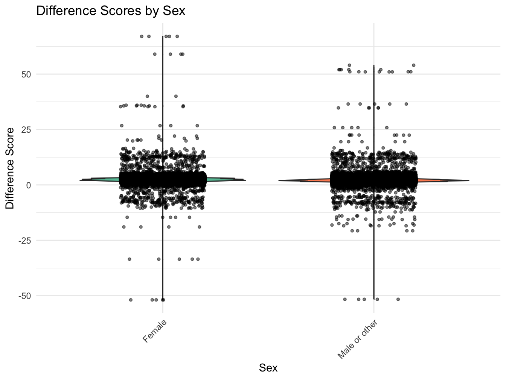

# rm(list = ls())
# Create a list of required packages
packages_required <- c("tidyverse","easystats","lme4","gtsummary","report","broom","gridExtra")
# Check which packages are not installed and install them
packages_to_install <- setdiff(packages_required, rownames(installed.packages()))
if (length(packages_to_install) > 0) {
install.packages(packages_to_install)
}
# Load the required packages
lapply(packages_required, library, character.only = TRUE)Difference Scores: Simple Regression
Simple Regression
Overview
This example assesses whether growth in a subsample of ABCD participants from Baseline (T0) to the 1-Year follow-up (T1) differs significantly based on handedness, using height (“anthroheightcalc”) as a representative metric of growth. The analysis is conducted in two primary steps: 1) a difference score is calculated between baseline and Year_1 height measurements for each participant; 2) a simple regression analysis is used to test whether sex (boy, girl) predicts the average difference value in participants height from baseline to the 1-Year follow-up. Finally, a visual inspection is further conducted via a violin plot to graphically represent the relationship between difference scores and sex. The ensuing analysis and interpretations are detailed in the subsequent sections.
Preliminary Setup
This code installs the r packages necessary for this example, if they are not already installed
This code loads the r libraries necessary for this example
library(tidyverse) # Collection of R packages for data science
library(easystats) # Collection of R packages statistical modeling, visualization, and reporting
library(rstatix) # Pipe-friendly framework for performing common stats
library(gtsummary) # Publication-ready tables
library(report) # Easy reporting of regression analyses
library(broom) # Tidy and augment statistical models output
library(gridExtra) # Arrange multiple grid-based plots on a pageThis code configures knitr code chunk options
knitr::opts_chunk$set(echo = T, message=F, warning=F, error=F,
comment=NA, cache=T, code_folding=T,
R.options=list(width=220, digits = 3),
fig.align='center',
out.width='75%', fig.asp=.75)Descriptives Overview
This code reads in and shows the data to be used in the current example
# Set the data paths
data_path_1 <- "/Users/shawes/ABCD/data/rds/abcd_5.0_rds/demo5.0.rds"
data_path_2 <- "/Users/shawes/ABCD/data/rds/abcd_5.0_rds/core-rds-5.0/non-imaging_excluding_nt_5.0.rds"
# Read the data
data_demographics <- readRDS(data_path_1)
data_nonimaging <- readRDS(data_path_2)
# Subset the nonimaging data to include desired variables
selected_vars <- c("src_subject_id", "eventname", "nihtbx_totalcomp_fc", "anthroweightcalc", "anthroheightcalc")
subset_data <- data_nonimaging[, selected_vars]
library(dplyr)
# # Merge the datasets on 'src_subject_id' and 'eventname'
merged_data <- data_demographics %>%
full_join(subset_data, by = c("src_subject_id", "eventname"))
# Inspect the merged data structure
str(merged_data)
# Define event names to be retained in the analysis and convert variables to appropriate data types
eventnames_to_include <- c("baseline_year_1_arm_1",
"1_year_follow_up_y_arm_1",
"2_year_follow_up_y_arm_1",
"3_year_follow_up_y_arm_1",
"4_year_follow_up_y_arm_1")
df <- merged_data %>%
filter(eventname %in% eventnames_to_include) %>%
mutate(
src_subject_id = as.factor(src_subject_id),
eventname = factor(eventname, levels = eventnames_to_include, ordered = TRUE),
age = as.numeric(age),
sex = as.factor(sex),
race.4level = as.factor(race.4level),
hisp = as.factor(hisp),
high.educ.bl = as.factor(high.educ.bl),
household.income.bl = as.factor(household.income.bl),
acs_raked_propensity_score = as.numeric(acs_raked_propensity_score),
rel_family_id.bl = as.factor(rel_family_id.bl),
site_id_l = as.factor(site_id_l),
nihtbx_totalcomp_fc = as.numeric(nihtbx_totalcomp_fc),
anthroweightcalc = as.numeric(anthroweightcalc),
anthroheightcalc = as.numeric(anthroheightcalc)
) %>%
# Exclude cases from unused assessment waves
filter(!is.na(eventname))This code creates a descriptives table
descriptives_table <- df %>%
select(eventname, sex, race.4level, hisp, anthroweightcalc) %>%
mutate(eventname = factor(eventname, labels = c("Baseline", "Year 1","Year 2","Year 3","Year 4"))) %>%
mutate(sex = factor(sex, labels = c("Female", "Male"))) %>%
tbl_summary(
by = eventname,
missing = "no",
label = list(sex ~ "Sex", race.4level ~ "Race", hisp ~ "Hispanic",
anthroweightcalc ~ "Weight"),
statistic = list(all_continuous() ~ "{mean} ({sd}) )", all_categorical() ~ "{p}%"),
) %>%
modify_header(all_stat_cols() ~ "**{level}**<br>N = {n}") %>%
bold_labels() %>%
italicize_levels() %>%
modify_spanning_header(all_stat_cols() ~ "**Assessment Wave**")
theme_gtsummary_compact()
descriptives_table| Characteristic | Assessment Wave | ||||
|---|---|---|---|---|---|
| Baseline N = 118681 |
Year 1 N = 112201 |
Year 2 N = 109731 |
Year 3 N = 103361 |
Year 4 N = 47541 |
|
| Sex | |||||
| Female | 48% | 48% | 48% | 47% | 48% |
| Male | 52% | 52% | 52% | 53% | 52% |
| Race | |||||
| Asian | 0.5% | 0.4% | 0.4% | 0.5% | 0.4% |
| Black | 16% | 15% | 15% | 14% | 12% |
| Other/Mixed | 17% | 17% | 17% | 17% | 16% |
| White | 66% | 67% | 67% | 68% | 72% |
| Hispanic | 21% | 20% | 20% | 20% | 21% |
| Weight | 83 (24) ) | 94 (28) ) | 109 (49) ) | 123 (38) ) | 139 (111) ) |
| 1 %; Mean (SD) ) | |||||
Results
The code snippet below tells R to compute a difference score by subtracting each participant’s height at T1 from their height at T0. Relevant summary statistics are also provided.
STEP 1: Compute Difference Score
# Define the function to compute difference scores for a given variable and provide a summary
# Function to compute difference scores for a given variable and provide a summary
compute_difference_and_summary <- function(df, variable_name) {
# Define the event names of interest
baseline_event <- "baseline_year_1_arm_1"
followup_event <- "1_year_follow_up_y_arm_1"
# Compute the difference between Baseline and Year 1 data for the given variable
diff_data <- df %>%
filter(eventname %in% c(baseline_event, followup_event)) %>% # Filter for specific event names
select(src_subject_id, eventname, all_of(variable_name)) %>% # Select required columns
spread(eventname, variable_name) %>% # Convert data from long to wide format
mutate(diff = get(followup_event) - get(baseline_event)) %>% # Compute difference between the two time points
drop_na(diff) # Exclude rows with NA in the computed difference
# Summarize the computed difference scores
diff_summary <- summary(diff_data$diff)
# Return the difference data and its summary
list(data = diff_data, summary = diff_summary)
}
# List of variables for which difference scores are to be computed
variables_of_interest <- c("anthroheightcalc")
# Compute and store difference scores and summaries for each variable in a list
difference_and_summary_list <- lapply(variables_of_interest, function(var) {
compute_difference_and_summary(df, var)
})
# Extract the difference data for the 'anthroheightcalc' variable
height_diff_data <- difference_and_summary_list[[1]]$data
# Merge the 'diff' column back to the main df using 'src_subject_id' as the key
df <- left_join(df, height_diff_data %>% select(src_subject_id, diff), by = "src_subject_id")Descriptive Statistics for the Difference Score
# Compute statistical summaries for the difference score variable
lapply(difference_and_summary_list, function(item) {
print(item$summary)
}) Min. 1st Qu. Median Mean 3rd Qu. Max.
-51.9 1.8 2.2 2.4 3.0 67.0 [[1]]
Min. 1st Qu. Median Mean 3rd Qu. Max.
-51.9 1.8 2.2 2.4 3.0 67.0 This summary of the difference score variable indicates that the differences range from a decrease of -51.875 units to an increase of 67 units. The median difference is 2.25 units, and the average difference is approximately 2.3660611 units. There are 0 missing values in this difference score dataset.
Descriptive Statistics for the Height Variable
## Summary statistics
# Compute summary statistics for Height by eventname
summary <- df %>%
group_by(eventname) %>%
get_summary_stats(anthroheightcalc, type = "mean_sd")
data.frame(summary) eventname variable n mean sd
1 baseline_year_1_arm_1 anthroheightcalc 11859 55.2 3.33
2 1_year_follow_up_y_arm_1 anthroheightcalc 11142 57.6 3.65
3 2_year_follow_up_y_arm_1 anthroheightcalc 9190 60.2 3.61
4 3_year_follow_up_y_arm_1 anthroheightcalc 3797 62.4 4.10
5 4_year_follow_up_y_arm_1 anthroheightcalc 4184 64.7 4.81The summary statistics provide insights into the Height variable across different eventname categories. At baseline, the average height is approximately 55.241 units with a standard deviation of 3.331. Over the years, there’s a noticeable increase in average height: by the first year, it’s about 57.595 units, and it continues to rise, reaching approximately 64.694 units by the fourth year. The standard deviation remains relatively consistent over the years, suggesting similar variability in height measurements across these time points.
A simple regression analyses is conducted to examine whether a grouping variable (sex) significantly predicts the difference score value (indicating significant group differences in the average difference score).
STEP 2: Conduct regression on Difference Score
# Merge the 'sex' variable from the original dataframe 'df' to 'height_diff_data'
merged_data <- height_diff_data %>%
left_join(df %>% select(src_subject_id, sex), by = "src_subject_id")
# Ensure 'sex' is a factor
merged_data$sex <- as.factor(merged_data$sex)
# Run the regression
model <- lm(diff ~ sex, data = merged_data)
# Get the summary of the regression model
model_summary <- summary(model)
model_summary
Call:
lm(formula = diff ~ sex, data = merged_data)
Residuals:
Min 1Q Median 3Q Max
-54.41 -0.59 -0.11 0.47 64.47
Coefficients:
Estimate Std. Error t value Pr(>|t|)
(Intercept) 2.5308 0.0167 151.8 <2e-16 ***
sexMale or other -0.3376 0.0230 -14.7 <2e-16 ***
---
Signif. codes: 0 '***' 0.001 '**' 0.01 '*' 0.05 '.' 0.1 ' ' 1
Residual standard error: 2.51 on 47586 degrees of freedom
Multiple R-squared: 0.00449, Adjusted R-squared: 0.00447
F-statistic: 215 on 1 and 47586 DF, p-value: <2e-16This regression analysis evaluates whether sex (boy, girl) predicts the average difference in participants’ height from baseline to the 1-Year follow-up. The output from our model provides:
- an F-statistic of 214.6560227;
- degrees of freedom of 47586;
- a parameter estimate of -0.3376126;
- standard error of 0.0230434;
- p-value of 1.6900378^{-48}.
Compared to boys (the reference group), girls have an average increase in height difference of approximately -0.338 units. This effect was marginally significant with a p-value of 0. Overall, the model explained a very small portion of the variance in height difference, with an adjusted R-squared value of 0.00447, and the overall model significance was not statistically significant with a p-value of 1.6900378^{-48}.
# Visualize the difference scores across different levels of sex
# Create a violin plot to show the distribution of difference scores by sex
# Jittered points are added to provide a more granular view of individual observations
# Load necessary libraries
library(dplyr)
library(ggplot2)
library(RColorBrewer)
# Merge the 'sex' variable from the original dataframe 'df' to 'height_diff_data'
merged_data <- height_diff_data %>%
left_join(df %>% select(src_subject_id, sex), by = "src_subject_id")
# Plotting using ggplot2
ggplot(merged_data, aes(x = sex, y = diff, fill = sex)) +
geom_violin() +
geom_jitter(position = position_jitter(width = 0.2), size = 1, alpha = 0.5) +
scale_fill_brewer(palette = "Set2") +
labs(
title = "Difference Scores by Sex",
x = "Sex",
y = "Difference Score"
) +
theme_minimal() +
theme(
axis.text.x = element_text(angle = 45, hjust = 1),
legend.position = "none"
)
The violin plot visualizes the distribution of difference scores in children’s heights by their sex: Right, Left, and Mixed. Each violin shape provides insight into the density of the data at different height differences, with wider sections representing higher densities of data points. Superimposed jittered points offer a granular view of individual observations. From the plot, it appears that the distributions of height differences across the three handedness categories are somewhat similar, though there might be subtle variations in median and spread.
Wrapping Up
Differences in children’s heights between baseline and a subsequent 1-year follow-up, we sought to understand the potential influence of sex on this difference. Descriptive statistics revealed that height differences ranged from a decrease of -51.875 units to an increase of 67 units, with a median difference of 2.25 units and an average difference of approximately 2.3542189 units. Subsequent regression analysis indicated that, when compared to boys, girls had an average increase in height difference of approximately -0.338 units, though this effect was marginally significant (p = 0). Complementary to these findings, violin plots visually underscored the subtle variations in height differences across sex categories, suggesting broadly similar distributions but with nuanced variations in central tendency and spread. In conclusion, while sex exhibited a potential influence on height difference over the year, the observed effect was notably minor.